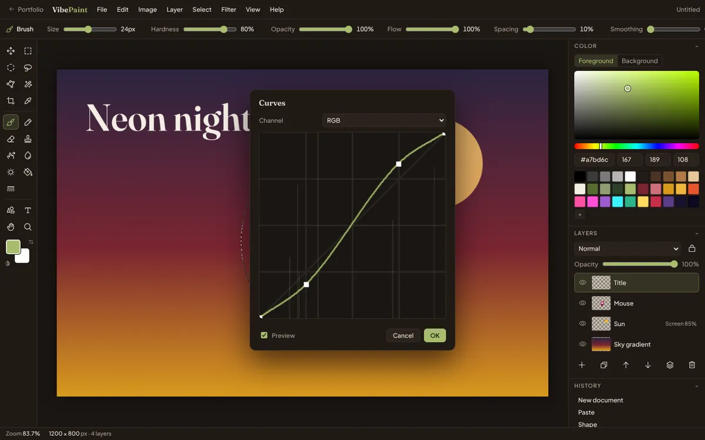

The goal
Version 1 was a simple layered paint app: five tools, four filters and a 20-step undo. It looked right, but it couldn't do real work. For version 2 the brief was a "Photoshop lite": the tools people actually reach for in Photoshop, Photopea or GIMP, working the way their hands already expect, in a single browser tab.
The visual idea from v1 stayed: a dark, quiet interface with a single olive accent, so the painting is always the brightest thing on screen.
What's in it
- Painting: brush, pencil, eraser, clone stamp, smudge, blur/sharpen and dodge/burn. Brushes have size, hardness, opacity, flow, spacing and smoothing, and respond to pen pressure.
- Selections: rectangle, ellipse, lasso, polygonal lasso and magic wand, with add/subtract/intersect, feather, expand/contract and marching ants. Every filter respects the selection.
- Layers: 16 blend modes, opacity, lock transparency, duplicate, merge, flatten and "layer via copy".
- Transform: move, free transform with handles, crop, rotate and flip, and image and canvas size.
- Color: Levels, Curves, Hue/Saturation, Color Balance, Black & White, Gradient Map and more, each with a live preview.
- Filters: blurs, Unsharp Mask, noise, mosaic, halftone, emboss, distortions such as Twirl and Wave, and Clouds.
- Files: open or drop images, paste from the clipboard, export PNG, JPEG or WebP, and save the layered project to reopen later.

Key design decisions
1. Borrow the muscle memory
People who edit images already know B for brush, M for marquee, Ctrl+M for Curves and Alt+Backspace to fill. VibePaint uses the same shortcuts and modifiers: Shift adds to a selection, Alt subtracts, and Shift snaps lines to 45°. Hover any tool to see its shortcut. There's also a full list under Help.
2. Preview everything, commit once
Every adjustment and filter previews live on the canvas while you drag its sliders, and nothing touches your pixels until you press OK. Cancel always gets you back to exactly where you were.
3. One options bar, not a dozen panels
Each tool's settings sit in a single bar above the canvas and change with the tool. Color, layers and history stack in one column on the right. On a narrow screen they fold away into a drawer.
4. Nothing leaves your machine
Images are opened and edited locally, and autosave writes to your own browser's storage. There's no account and no upload, so it's safe to open a personal photo.
What broke, and how it got fixed
- Shortcuts that silently vanished. Each tool stored its shortcut letter and its keyboard handler under the same name, so the handler overwrote the letter and the shortcut stopped showing. Renaming the handler fixed it.
- A "drop image here" overlay that never left. A style rule overrode the browser's "hidden" flag, so the hint covered the canvas permanently. One extra rule fixed it.
- A phone layout wider than the phone. The tool rail and the menu pushed the page out to 466px on a 390px screen, and the menu covered the panel button. The layout now shrinks to fit, the menu scrolls sideways, and the panels open as a drawer.
Working with AI
Version 1 was built with Gemini from my design direction. For version 2 I set the scope and the reference point (Photoshop, Photopea, GIMP), and Claude wrote the code as a set of small modules. My job was testing: does this feel like the tools I know, is anything confusing, what's missing? Everything was also checked with scripted browser tests that paint, select, transform, filter, undo and export.
Version history
- v1: Paint app. Five tools, layers with opacity, four filters, 20-step undo, PNG export. Built with Gemini.
- v2: Photoshop lite. Rebuilt from scratch: 21 tools, blend modes, selections, 14 adjustments and 18 filters with live preview, pen pressure, a history panel, project files and autosave.
What's next
- Layer masks and adjustment layers, so edits stay non-destructive.
- Editable text layers (text is flattened to pixels once placed).
- A tablet-first layout.